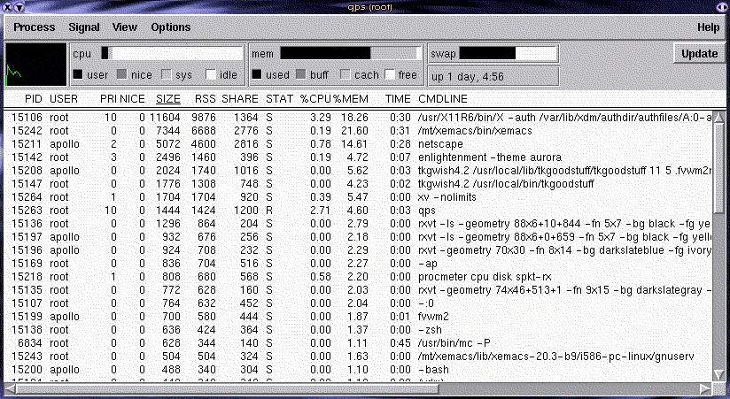

![[ TABLE OF CONTENTS ]](../gx/indexnew.gif)
![[ FRONT PAGE ]](../gx/homenew.gif)


The Qt C++ software development toolkit, by Norway's Troll Tech, has been available long enough now that applications are beginning to appear which use Qt rather than Motif, Xlib or Tcl/TK. Programs developed with Qt have an identifiable and distinctive appearance, with some resemblance to both Windows and Motif. There has been some resistance in the Linux community to widespread adoption of the toolkit due to its hybrid licensing arrangement. The toolkit is freely available in the Linux version, and its use in the development of free, GNU-ish software is free and unrestricted, but for other platforms and for commercial Linux software Qt is a commercial product.
Remember when Tcl/Tk began to become widely used a couple of years ago? Applications and utilities written with the toolkit began to proliferate, one reason being that the learning curve is relatively gentle and a quick X interface to a command-line utility could be contrived in a short time. C programmers found that the guts of a program could be written in C, while the tricky X-windows interface could be quickly put together with Tcl/Tk. This benefited the Linux community as a whole, making it easier for new users and developers to gain a foothold on the sometimes forbiddingly steep unix terrain.
Qt is an entirely different sort of toolkit than Tk, since it is based on C++ and doesn't have the interpreted script layer of Tk. (It more closely resembles Bruce Wampler's V package, described in the Dec. 1996 issue of Linux Journal.) In order to run QT applications the libqt shared lib must be available as well as a small executable, moc. The Qt header (include) files are needed as well to compile these applications from scratch. The Qt source package is available from the Troll Tech FTP site. Many small sample applications and demos, as well tutorials and ample documentation, are included in the package.
Mattias Engdegård has recently written and released a process monitor similar to top, the classic interface to ps. Top, though a character-mode application, is commonly run in an xterm or rxvt window in an X session. There is one problem with top in a window; scrolling down to the bottom of the process list doesn't work, so the entries at the bottom are inaccessible without resizing the window. There may be a way to do this, but I haven't been able to find one. A minor issue, I suppose, since the ordering of the entries can be easily toggled so that either the most memory-intensive or the most CPU-intensive processes appear at the top.
Qps is a more X-friendly application than top, with scrollbars and a mouse-oriented interface. Clicking on any of the header categories, such as %CPU, SIZE, or %MEM, will sort the processes in descending order. Alt-k will kill a highlighted process. A series of bar-graphs along with an xload-like meter form a status bar at the top of the window. This can be toggled on and off from the menu-bar. When Qps is iconified the icon is the small xload-like pane from the status-bar, which is a nice touch.
Here's a screenshot:

Qt applications don't use the X resources typical of most X programs; one result of this is that Qps seems to be confined to the default white, gray, and black color scheme. It can generate a resource file in your home directory which specifies which fields you'd like to see and whether the status-bar should be visible or not.
Qps could be thought of as a sort of second-generation Linux utility, written for users who rarely work from the console and boot directly into an X session. It should fit in well with the KDE suite of applications, which are also being developed with Qt. Though it uses more memory than top in an rxvt window, I find myself using it often while running X. I think this is a solid, dependable application and deserves attention from the Linux community.
Currently the Qps-1.1 source is in the Sunsite Incoming directory, but will most likely end up in the status directory. An alternate Swedish site is here.